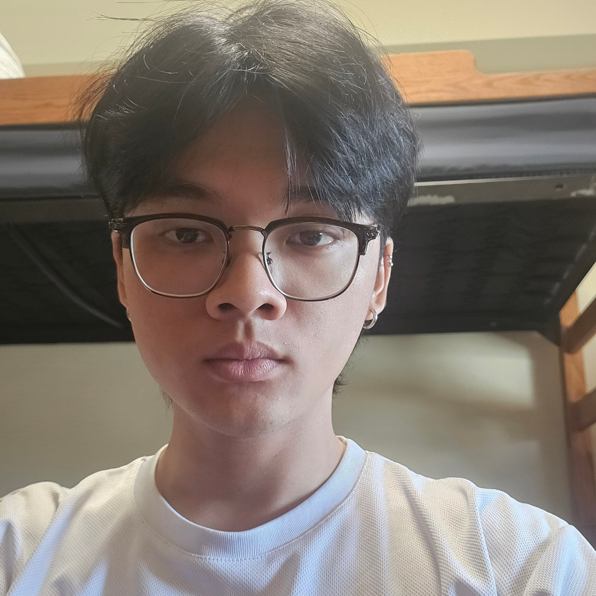
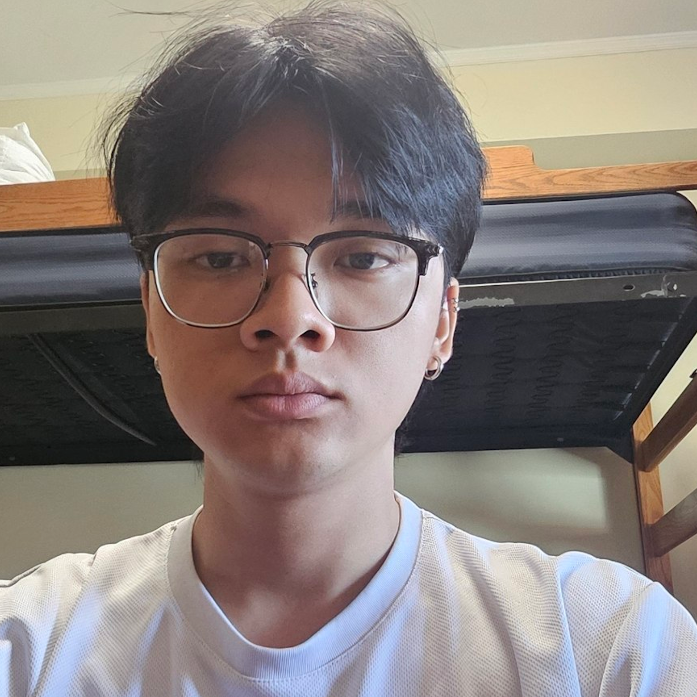
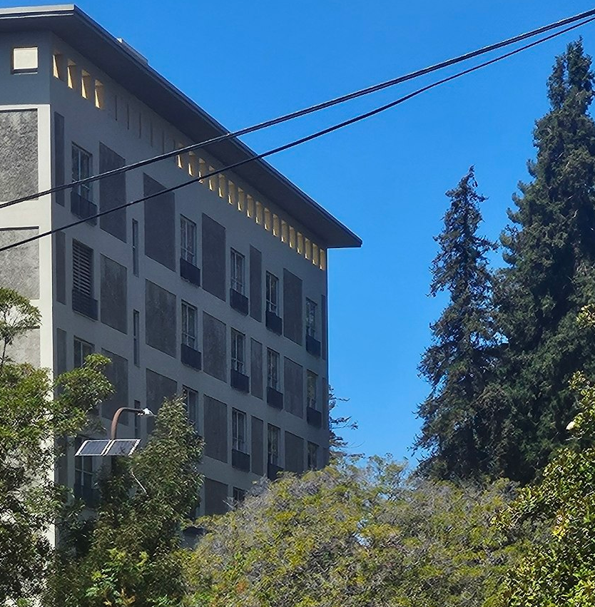
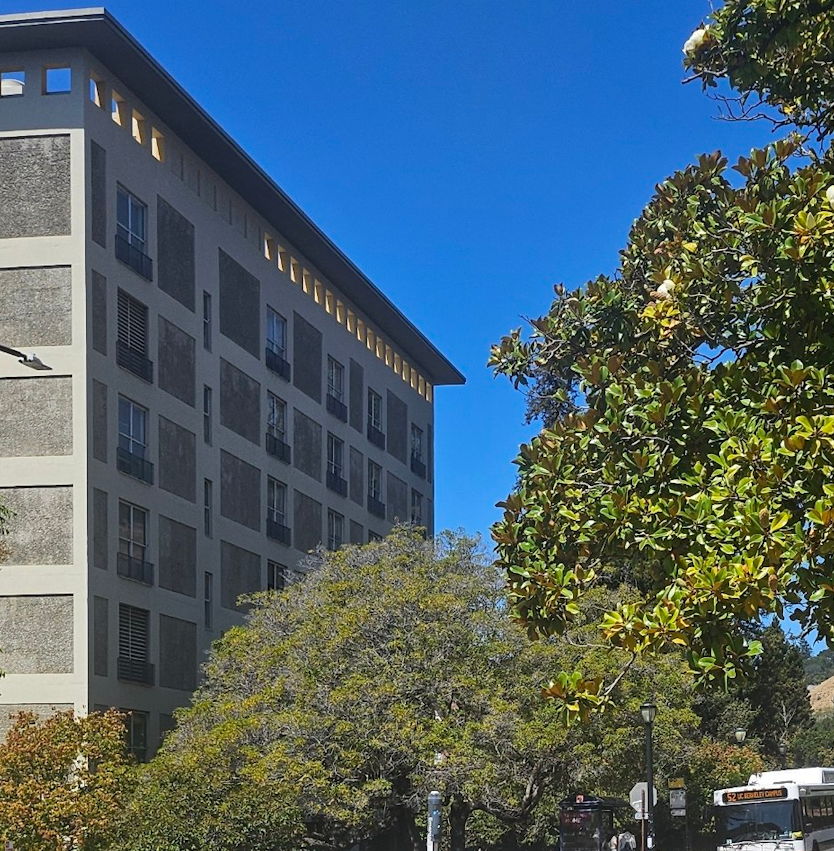
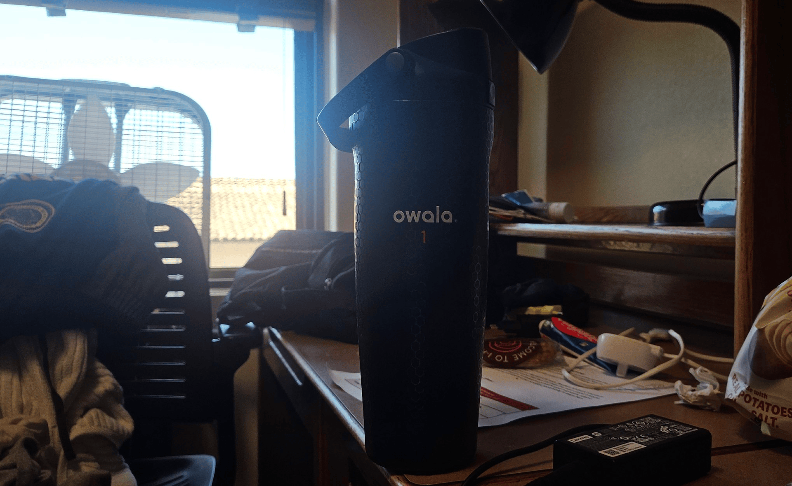
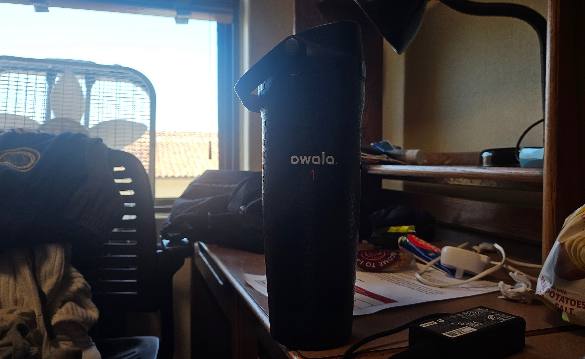
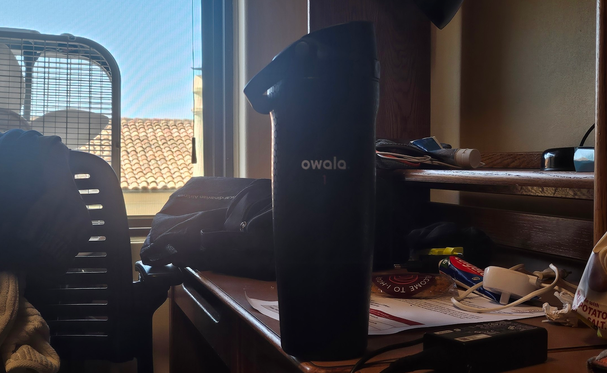
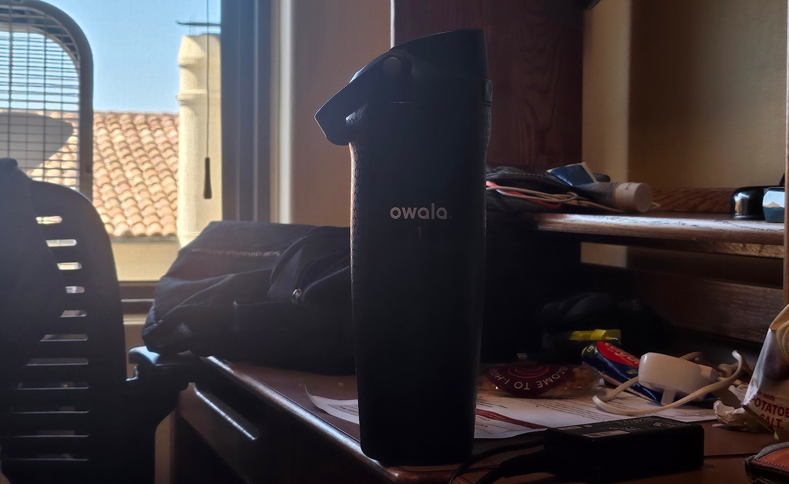
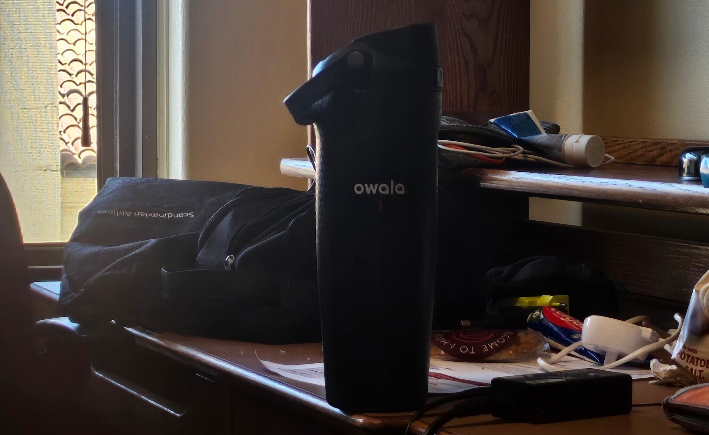

Overview
This project is about getting familiar with how a camera actually sees. Across the 3 parts, I take pairs of photos where the subject stays roughly the same size in the frame, but I change either the focal length or how far away I am standing. The point is that keeping the subject the same size does not keep the photo the same, because what really shapes the image is where the camera is sitting, not how much I zoom. Everything here was shot on my phone, so the range I could work with was limited, but the effects still show up.
Part 1: Selfie: The Wrong Way vs. The Right Way
Unfortunately, I lack access to a camera with indepth lens control, and so I used my Samsung Flip 5. There are 2 cameras, the main camera is a 5mm and the ultra-wide is a 3mm. According to GSMArena, they are equivalent to 24mm and 13mm respectively.


What changed, and why
I think the lack of focal length range limits the comparison, but I would say the shorter focal length (3mm/~13mm) distorts the image more by pulling my nose and eyes closer to the front, while slightly pushing my ears back. The main shorter focal length (5mm/~24mm) does a better job at keeping my face rounder and flatter, giving a better representation of a flat mirror.
At a shorter focal length, a wider angle of incoming light is captured and focused onto the sensor, resulting in a wider field of view. To be the same size, I would have to move nearer to the camera (but because the range is so similar, I was basically the same size). Because features like my nose are closer to the lens, it occupies more percentage of the FOV compared to farther features like my ears. Thus, distorting by enlarging my nose slightly and shrinking by ears (relative).
Part 2: Architectural Perspective Compression
For my building, I took shots of Simon Hall from the sidewalks of International House. My first shot was far and zoomed in at ~2.5x, then moved nearer to the building and shot at 1x. Then I cropped the two images, aligning them by the top left corner of the building.


What changed, and why
As you mentioned, the zoomed in shot has the compressed width-wise, and moving closer to the building, the 1x picture lengthens the building again. Because the focal length is fixed, when I'm closer to the building (at 1x zoom), the building it taking up a wider angle of the field of view, creating a stretched effect.
When I move further, the building is taking up a narrow angle of the field of view, the difference of the building corners shrinks, creating a smaller footprint (compression). Zooming in doesn't create this flattening effect, it just magnifies the flatten image of the building.
Part 3: The Dolly Zoom
(Please excuse my roommate's mess) For the dolly zoom, I chose a more controlled environment within my dorm room, taking 4 still shots of my water bottle. I started at about 50cm away from the subject, then took 3 more shots at ~30cm intervals. I then aligned and sized them in-post, before using a free gif maker tool online to compile them.

Individual frames




Takeaways
The main thing I took away is that zoom and distance are not the same thing, even though they look similar in the viewfinder/preview. Zooming in only magnifies what is already there, it does not change the perspective at all. What actually changes the shape of a face or a building is where I choose to stand, because that changes how different the distances are from the lens to the near parts and the far parts of the subject. Standing close makes that difference large and exaggerates whatever is nearest, and standing back makes it small and flattens everything out.
The other takeaway is a practical one. My phone only gives me ~13mm and ~24mm, so the range was narrow and the differences between my shots are subtler than I wanted. If I did this again I would borrow a camera with proper lens control so the compression is more obvious.